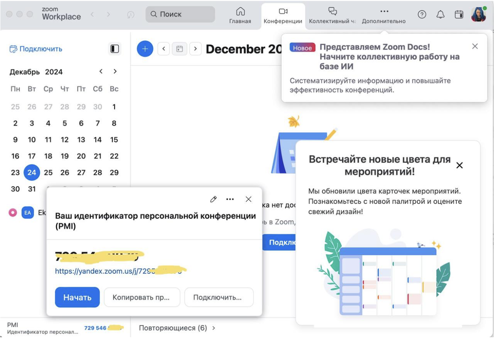
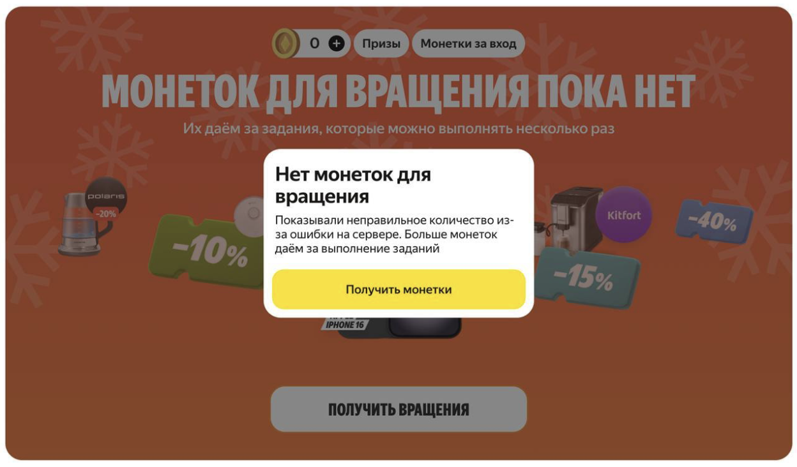

Проверка на тестовых стендах и адаптивность под экраны
Привычка проверять тексты на тестовых стендах перед релизом — полезный навык, который стоит завести. Я сама иногда довольствуюсь отправкой текстов в разработку и не всегда проверяю их в тестовых сборках. Проблем не возникало, потому что наши дизайнеры качественно готовят макеты к разработке, проводят дизайн-ревью и подробно объясняют разработчикам, как должен выглядеть интерфейс на проде. Самое страшное, что случалось из-за отсутствия проверки, — висячие предлоги или неидеальные переносы.
Редактору важно подстраховаться еще на этапе написания текстов и проектирования. Помните о маленьких диагоналях экранов: среди пользователей обязательно будут люди с компактными смартфонами. Один и тот же текст на iPhone 16 Pro Max и на старом iPhone выглядит по-разному. На маленьком экране заголовок может уехать в троеточие, наложиться на графику или обрезаться. Если сомневаетесь, просите дизайнера собрать макет для минимальной диагонали. В зависимости от результата нужно либо писать отдельный текст для маленьких экранов, либо изначально формулировать короткий универсальный текст, который подойдёт для любого дисплея.
|
 Пример того, как у зума обрезается текст — вопросы к локализаторам на русский |
Висячие предлоги
Висячие предлоги — это не просто эстетика. На предлоги и союзы в конце строк падает внимание пользователя, он спотыкается, читает медленнее. В интерфейсах, где важна скорость восприятия (например, во время платежа или оформления заказа), каждая лишняя миллисекунда — это падение конверсии. Для пожилых людей или людей с дислексией такие конструкции вообще становятся барьером. Поэтому неразрывные пробелы влияют не только на красоту, а ещё создают невидимое ощущение заботы.
Разработчики не всегда помнят про типографику, потому что в коде они видят переменные и ключи, а не финальный текст. Редактор должен быть тем, кто напоминает, проверяет и при необходимости заводит баг-трекер. Это одна из точек роста — когда вы перестаёте просто «исправлять текст» и начинаете выстраивать процесс так, чтобы ошибки не доходили до прода.
|
 Висячие предлоги создают визуальный шум |
Локализация
Не будем здесь подробно об этом говорить, всё-таки это отдельная большая тема, но упомянуть стоит.
Иногда тексты хранятся не в коде, а в специальных ключах, которые подгружаются в интерфейс в зависимости от языка пользователя. И если вы заметили в интерфейсе висячий предлог, его можно поправить прямо в админке локализации, не выпуская отдельный релиз в сторах. С точки зрения скорости это колоссальный апгрейд: раньше любое изменение текста требовало сборки приложения, тестирования и публикации, а теперь вы исправляете одну строчку в ключе — и через пару минут обновление видят все пользователи. Но у этой скорости есть и обратная сторона: без контроля в админке можно накосячить так же быстро, как и исправить, поэтому нужны процессы.
Типичный процесс выглядит так: когда все тексты для фичи утверждены в дизайн-макетах, команда собирает выгрузку текстовых ключей и присылает редактору на финальную проверку. Это последняя точка контроля перед тем, как тексты уедут на перевод и потом на прод. И здесь важно понимать, что выгрузка ключей — это всегда кусочно-мозаичная картинка. В таблице или админке вы видите текст без контекста: просто строка для экрана А, строка для экрана Б, и каждая живёт сама по себе. Они не показывают, где этот текст находится, с какими элементами соседствует и как вписывается в общий флоу. Поэтому задача редактора не просто пробежать глазами грамматику, а восстановить контекст: открыть рядом финальный дизайн-макет, посмотреть, что находится сверху и снизу от каждого текста, проверить, не изменилась ли логика экрана с момента передачи ключей в разработку. Иногда в дизайне был один заголовок, а в ключи уехал другой, потому что продакт попросил поменять на лету, а обновить выгрузку забыли. Это ваша зона ответственности — поймать такие рассинхроны до того, как текст попадёт к пользователям.
Кроме проверки смыслов и грамматики, на этом этапе вы прогоняете все строки на наличие висячих конструкций. Добавляете неразрывные пробелы перед предлогами и союзами в конце строки, ставите неразрывные тире в датах и номерах. И здесь есть профессиональный нюанс: вы не обязаны запоминать Unicode-коды для неразрывных пробелов (U+00A0) или тонких пробелов (U+2009) — это работа разработчиков или вёрстальщиков. Ваша задача — явно подсветить места, где они нужны, прямо в тексте ключа. А ещё лучше — договориться с командой, чтобы процесс был автоматизирован частично: например, чтобы препроцессор сам добавлял неразрывные пробелы перед короткими предлогами, а вы только проверяли сложные случаи. Это уже уровень системного мышления, когда вы не только исправляете ошибки, а выстраиваете процесс так, чтобы они не доходили до проде в принципе.
Но система локализации — не волшебная таблетка, и у неё есть риски.
- Первый: доступ в админку может быть у многих, и если кто-то правит тексты без вашего ведома, на проде может появиться кривой или неуместный вариант. Поэтому важно, чтобы вы как редактор были в цикле всех изменений — даже мелких. В идеале настроить уведомления на любые правки в ключах или сделать правило, что без вашего апрува текст не едет на прод.
- Второй риск: при выгрузке ключей на перевод иногда теряется контекст для переводчиков. Они видят отдельные фразы и не знают, что в интерфейсе они будут соседствовать с другими элементами, которые могут влиять на смысл. Хороший редактор пишет комментарии к сложным ключам — объясняет, где появляется этот текст и что важно донести до пользователя. Это помогает перевести фразу не дословно, а адаптивно под сценарий, и на английском или других языках она звучит так же естественно, как и на русском.
Отдельно стоит сказать про грейд. Проверка локализации — это база, и любой редактор с этим справляется. Но рост начинается там, где вы не только проверяете, а предлагаете улучшить сам процесс. Например, вы замечаете, что одни и те же типовые ошибки с неразрывными пробелами повторяются из релиза в релиз, и предлагаете добавить автофикс на уровне сборки. Или видите, что в выгрузке ключей не хватает ссылок на макеты, и пишете регламент, чтобы в будущем каждая строка сопровождалась скриншотом экрана. Или замечаете, что переводчики часто возвращают неестественные формулировки на английском, потому что не видят контекста, и предлагаете писать коротенькие комментарии к каждому спорному ключу. Всё это необязательные вещи, которые делают вашу работу незаметной, но именно за них платят больше.
В итоге локализация — это последний защитный рубеж перед тем, как текст увидит пользователь. И в этом смысле её нельзя воспринимать как рутину. Это ваша возможность выявить все рассинхроны между макетом, кодом и реальным интерфейсом, пока ещё не поздно. И если вы на этом этапе поймали и исправили висячий предлог или неактуальный заголовок, считайте, что вы спасли команду от бага в продакшене. В хороших продуктах такие истории остаются незаметными, и это нормально. Но внутри команды все знают, кто тот человек, после которого тексты едут на прод чистыми.
Недавно у меня был случай, когда договорились с дизайнером зафиналить тексты, он пообещал, что нефинальные варианты никуда не утекут, а в итоге я получила задачу на апрув ключей — и угадайте что? Там были нефинальные тексты. Вот так быть не должно. Пришлось поговорить с дизайнером, и скорее всего, придётся быть внимательнее в будущем, может, пристальнее следить за статусами задач, чтобы история не повторялась.